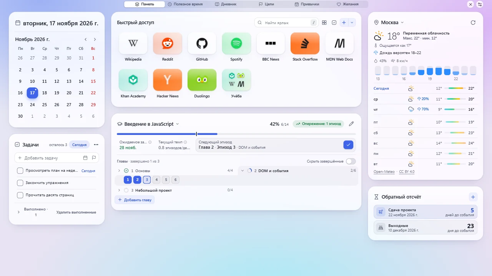
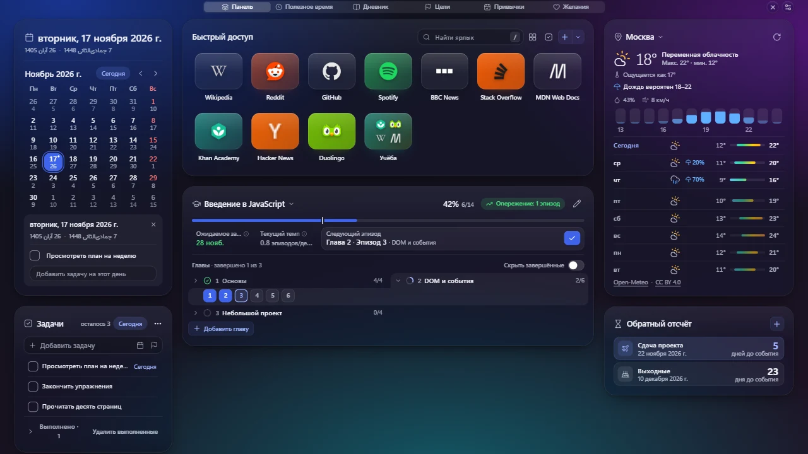

Новая вкладка Chrome с закладками и списком дел
В Tivona рядом с любимыми сайтами видны задачи на сегодня и календарь. Соберите рабочие ссылки в папку, отметьте сроки в календаре и запустите таймер, когда будете готовы взяться за задачу.
Бесплатное расширение для Chrome на компьютере. Tivona заменяет страницу новой вкладки и работает без аккаунта Tivona.

Быстрый доступ к сайтам и план на день
Визуальные закладки и папки
Разложите часто посещаемые сайты по папкам. Ищите нужный ярлык с клавиатуры или перенесите в панель быстрого доступа папку из закладок Chrome.
Список дел со сроками и приоритетами
Добавляйте сроки, приоритеты, заметки и шаги. Смотрите задачи на сегодня и просроченные дела. Щёлкните по дате в календаре, чтобы увидеть её задачи.
Григорианский, персидский и исламский календари
Выберите григорианский, персидский (джалали) или исламский календарь (хиджра). Их даты можно показывать вместе в месячной сетке. Персидский календарь показывает праздники Ирана.
Таймер Помодоро и учёт времени
Настройте длительность работы и перерывов или воспользуйтесь секундомером. Из карточки задачи можно запустить таймер и записать время, потраченное на эту задачу.

Настройте состав виджетов. Можно смотреть прогноз погоды, отсчитывать дни до события, отслеживать привычки, цели и ход обучения или вести дневник.
Как настроить первую вкладку
- Установите Tivona из Интернет-магазина Chrome и откройте новую вкладку.
- Добавьте любимый сайт или поставьте срок для задачи.
- В настройках выберите язык, календарь и нужные виджеты.
Частые вопросы
Можно ли импортировать закладки Chrome?
В панели быстрого доступа выберите импорт из закладок Chrome. Tivona запросит разрешение и скопирует выбранную папку.
Что делать, если у меня уже есть расширение для новой вкладки?
Chrome позволяет управлять страницей новой вкладки одному расширению за раз. Включить нужное расширение можно на странице расширений Chrome.
Как перенести задачи на другой компьютер?
В разделе «Настройки → Данные» экспортируйте резервную копию. Откройте Tivona на другом компьютере и восстановите данные из этого файла. Задачи входят в копию.
Работа без интернета и конфиденциальность
Календарь, задачи, дневник и таймер работают без интернета. Подключение понадобится для открытия сайтов, обновления прогноза и загрузки значков из сети.
Задачи, дневник и история работы хранятся на этом устройстве. При включённой синхронизации Chrome некоторые настройки и ярлыки могут синхронизироваться. В сборках, настроенных на PostHog, отправка данных об использовании добровольна и изначально отключена. Политика конфиденциальности (на английском)
Помощь и обратная связь
Для восстановления данных после обновления откройте Настройки → Данные → Автоматические резервные копии. Если нужна помощь, напишите в службу поддержки Tivona или откройте раздел поддержки на странице расширения в Интернет-магазине Chrome.